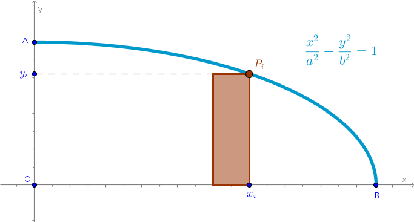

Problem
Find the square area of a plane region trapped inside an ellipse with \(a\) semi-major and \(b\) semi-minor axis.
Right Sum Solution
Let us construct Right Riemann Sum for one quarter of the ellipse located in the first quadrant where \(x \in [0, a]\):
Let:
$$OB = a$$ $$OA = b$$ $$\begin{equation} \frac {x^2}{a^2}+\frac {y^2}{b^2} = 1 \end{equation}$$The square area of the \(i-\)th primitive rectangle is:
$$A'_{i, r} = \frac {a}{n} \times y_i =$$ $$\frac {a}{n} \sqrt {b^2 - \frac {b^2}{a^2}x_i^2} =$$ $$\frac {a}{n} \sqrt {b^2 - \frac {b^2}{a^2} \frac {a^2}{n^2} i^2} =$$ $$\frac {ab}{n^2} \sqrt {n^2 - i^2}$$where from (1) we have used the fact that:
$$y(x) = \sqrt {b^2 - \frac {b^2}{a^2}x^2}$$Right Riemann Sum is:
$$A'_r = \frac {ab}{n^2} \sum_{i=1}^n \sqrt {n^2 - i^2}$$Four above sums make up the approximation of the square area of the entire ellipse:
$$A = \lim_{n\to +\infty} 4 \times A'_r =$$ $$\begin{equation} 4ab \lim_{n\to +\infty} \frac {1}{n^2} \sum_{i=1}^n \sqrt {n^2 - i^2} \end{equation}$$But we already found the magnitude of the limit in (2) in Circle chapter:
$$\lim_{n\to +\infty} \frac {1}{n^2} \sum_{i=1}^n \sqrt {n^2 - i^2} = \frac {\pi}{4}$$and hence:
$$A = 4ab \frac {\pi}{4}$$ $$\bbox[#e8e8e8,3pt]{A = \pi ab}$$\(\blacksquare\)